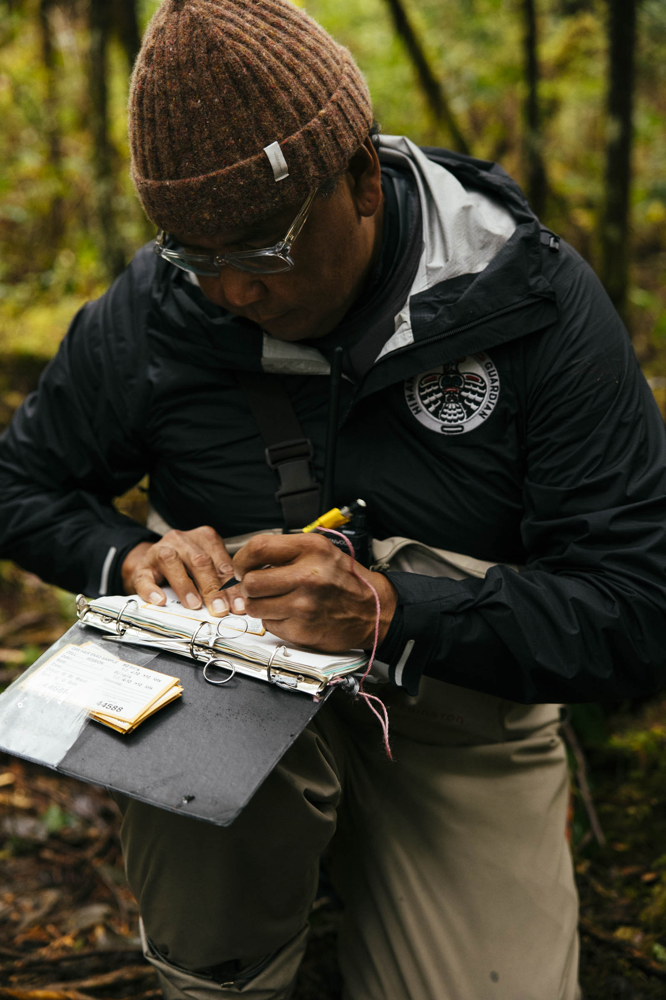
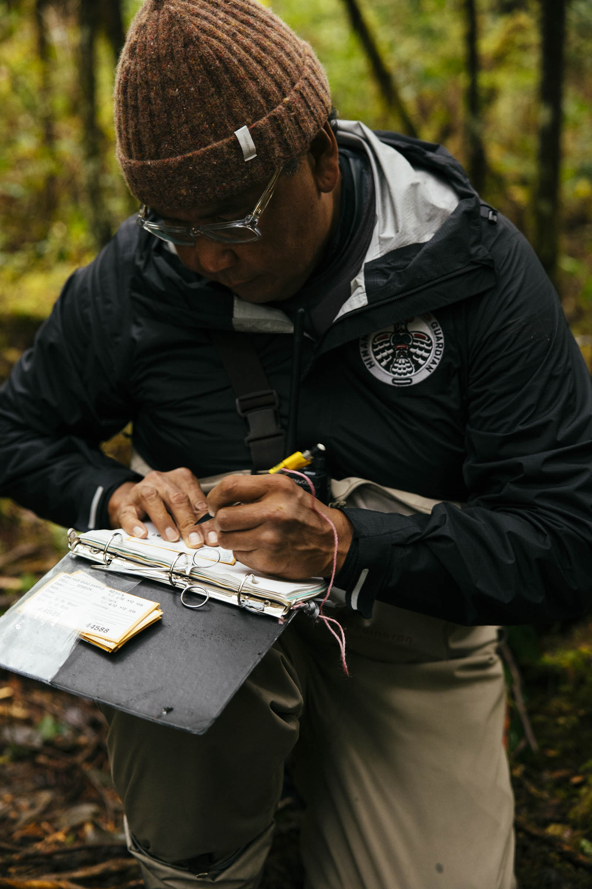
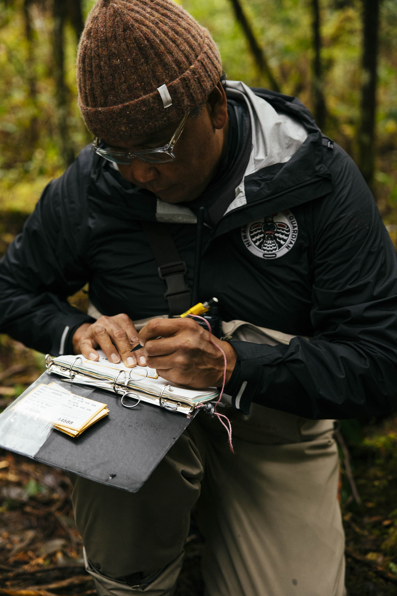

A Look Into The Himanis Guardians Program:

 


The Himanis Guardians help the Gwawa’enuxw First Nation honour its responsibility to care for its traditional lands, waters, wildlife, natural resources and people. They are considered the “eyes and ears” of its traditional territories. We aim to restore the balance and relationships with the land, water and resources that have sustained and continue to sustain our people.
The Himanis Guardians is an Indigenous-led charitable organization that protects and enhances the well-being of those who face barriers due to remoteness and systemic marginalization. We want to promote the cultural, social, physical and economic health and wellness of these people and communities, building relationships with them and following their direction. Local knowledge and trust must be at the forefront of every project.
These projects and programs can symbolize resilience and hope and represent abundance, community, and security. For example, they can assist with food preservation and storage. We support programs that offer a return and revitalization of unique Indigenous cultures and communities in coastal British Columbia. This might look different from nation to nation and place to place, but what must endure is the effort to ensure health and prosperity for the natural world and all people and communities living here.
To do so, we want to empower remote and marginalized communities to continue connecting with nature and protecting the land. At the same time, they must be equal participants in economic opportunities. Traditional lifestyles, connections to nature, security, safety, and equitable participation in economies lead to inclusion, health and wellness and stronger communities.
The Himanis Guardian Program is led by Hereditary Chief Irwin Speck of Gwawa’enuxw First Nation. It upholds respect for Gwawa’enuxw’s heritage and traditional use of its natural resources while caring for all aspects of the natural environment and the communities that live in it and beyond.
We are a non-profit organization rooted in Indigenous values, culture, and knowledge. Our goal is to improve the social, cultural, economic, and physical health of people in these communities.
The core of our philosophy is following the direction of local communities and building relationships with them. We know that local knowledge from local Elders and community members should guide all we do. To ensure this philosophy, we invest time in relationship building, provide training and employment opportunities for community members, and ensure they oversee decision-making.
We want to protect the environment by conserving and restoring our local land, water, wildlife, and natural resources. The Himanis Guardians care for the environment to ensure it will sustain animals, fish, and communities in the face of climate change. We run land guardianship programs across Coastal British Columbia.
We want to create economic opportunities for the community by creating funding and employment opportunities.
We want to reduce poverty and strengthen communities by providing access to essential infrastructure in remote areas. This infrastructure includes access to the internet and clean drinking water.
We want to create education and job training opportunities to create a sustainable economy in remote areas along British Columbia’s coast. Education and training programs include business management and accounting, technology, vessel operation, tourism, first aid training, environmental conservation and management.
We want to improve the health and wellbeing of people in remote areas, including individuals, families and communities, by ensuring access to mental health counselling and resources.
The Himanis Guardians program aims to protect our traditional land, water, wildlife, natural resources and people in Coastal BC. At the core of our organization is building relationships with the natural world, individuals, and communities and following the direction of the communities we work with. We know local knowledge and trust are the best guides for everything we do.
Our primary objective is to honour the responsibility to protect our traditional territories by conserving and restoring ecosystems. We work with and educate remote communities and First Nations in Coastal British Columbia to enhance environmental management and conservation..
We provide continuing education and job training opportunities to community members. These learning opportunities include training in business, tourism, technology, first aid, environmental management, and more.
Access to basic infrastructure is vital to the health and wellness of remote communities. This includes access to things like good internet and clean drinking water.
Access to mental health resources and counselling helps heal and build healthier people, families, and communities. We want to help provide access to this important care.
Sample sites are set up in areas frequented by bears, particularly grizzly bears. Essentially a string of barbed wire is set across the trail, and when a bear passes over it, a small tuft of hair is left behind. This does not hurt or harm the bear, but provides valuable data about each bear that passes by.
Samples are then collected and sent off to a lab at the end of each season. The lab then performs two types of analyses on the samples; a genetic analysis and a stable isotope analysis. The genetic analysis helps to identify the species, sex and individual identity of each bear. The stable isotope analysis provides a window into the bear's diet. This data then helps us to understand what foods the bears in the territory are eating (which is important due to their dwindling food sources, particularly wild pacific salmon), as well as to identify who the bears are and determine their ranges based on data sharing with other communities.
This program was started in 2019 through training and volunteer collaboration with MESSS (The Mainland Enhancement of Salmonid Species Society). It was discovered that the majority of rivers and streams within Gwawa’enuxw territory had not been enumerated since the 80’s. As salmon populations shift and decline there is a need for documentation. These watersheds provide food not just for Gwawa’enuxw but also for the entire ecosystem as a keystone species. Salmon are quite literally the heart of our coast in B.C, providing food for so many species, from eagles and ravens, to bears and wolves, to marine mammals such as sea lions and Orcas.
The data from this initiative is compiled into a report for the guardian program records, as well as shared with the community and The Department of Fisheries and Oceans. This data will also help to inform future habitat restoration projects that we wish to pursue.
Harvesting, processing and distributing traditional foods. This is ongoing throughout the season (typically May - October), and is dictated by the seasons and the land. Foods harvested include seaweed, salmon, berries, labrador tea, balsam bark, bog cranberries, seal, shellfish and more. All foods once harvested will be processed and stored and then shared with community members, either within the village or by transporting them out to surrounding communities and Gwawa’enuxw members' homes. In the past we have shared seaweed, balsam and salmon berries. This initiative recently received funding in order to access the materials to process and harvest traditional foods, such as a dehydrator, canning materials, fishing/crabbing/prawning gear, fish processing tables, etc., which will be put in place this year.
Territory surveys are performed by choosing a starting point along the coast line and boating very slowly along shore, looking for signs of traditional village sites; clam gardens, Culturally Modified Trees (CMT’s), and really anything that seems out of the ordinary. When something is observed, the team then sets off on foot to explore further. These surveys are performed in order to document areas of cultural significance and importance. As well, while out on the water, our guardians are also observing other boating and visitor activities, acting as the “eyes and ears” of the territory. Particularly keeping a watchful eye out for any unusual activity, such as poaching.
This project is currently underway, and almost complete. The Himanis Guardian Program received funding in collaboration with MESSS (The Mainland Enhancement of Salmonid Species Society). The restoration is performed by transporting spawning grade gravel to the creek which will then be distributed throughout the stream in order to improve spawning conditions for future salmon. There has been significant degradation of streams throughout the territory and area, largely due to impacts of the logging industry. Making this project hopefully the first of many for the Himanis Guardian Program.
Documentation of any wildlife observed by guardians while out in the territory. We record the location, time, species and behavior, as well as any additional information that seems necessary. This data is monitored in order to track the trends of populations within the area, as well as to provide valuable documentation for the potential future protection of areas; particularly those of significant importance to the community and to wildlife in the area.
Do you have a community-building project that fits into our programming? Contact us!

Led by Hereditary Chief Irwin Speck of Gwawa’enuxw First Nation, our team of professionals has the local knowledge and skills to support the important work of the Himanis Guardians. Our team provides mentorship, program facilitation, and personalized coaching to ensure the success of projects and programs, which results in healthier, thriving communities.
Irvin Speck is the hereditary chief of the Gwawa’enuxw First Nation and the creator of the Himanis Guardian Program. This program was created to rebuild and reconnect his community with its traditional territory in the southern Great Bear Rainforest in Coastal British Columbia. Irvin is committed to respecting the Gwawa’enuxw heritage and traditional use of natural resources while providing the leadership needed to retain his community's rights and sovereignty in their traditional territory.
Born and raised on Vancouver Island, Dani Brady is the Administrative Assistant and Program Coordinator for the Himanis Guardian Program. With over five years of experience working within Gwawa’enuxw Territory, she brings a deep knowledge of local wildlife and ecosystems, with a particular focus on wild pacific salmon. Currently pursuing a Bachelor of Arts in Environmental Practice at Royal Roads University, Dani is passionate about protecting wild spaces and prioritizing Indigenous leadership in the fight against climate change and biodiversity loss. She has worked with several non-profits in the Broughton Archipelago, contributing to projects focused on wild Pacific salmon and grizzly bears. This experience has shaped her role in supporting the co-development of key on-the-ground programs for the Himanis Guardians.